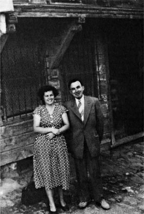

11 Temmuz 955, Pazartesi, gece, dokuzu beş geçe Beykoz’da kıyı parkında yazılıyor. İki şişe bira, bir kadehçik votka içildikten sonra. (Yarım uykulardan uyanınca yırtılıp atılmazsa karıma gönderilecektir.)
............................................................................................
“Anlatmak için çırpındığım gecelerde / Siz yoktunuz” diyor Özdemir Asaf, aklımda yanlış kalmamışsa. Ve seneler geçti ve yaz ayları geçti ve gençlik geçti. Ve kızgın sabahlarda, kızgın öğlelerde, ikindilerde, gece bazan saat 9’lara kadar ter içinde tercümelerde geçti, bir şeyler umarak; birikecekti paralar... Ve seneler sonra rahata... kavuşulacaktı. Ellerde kalan? Hiç! Ve aptallıktır harcamamız kendimizi delicesine. Çünkü hiçbir şey birikemeyecektir elimizde? Beş sene oldu evleneli, belki altı, belki yedi (sayıları boşver, zamansız!) Kalan ne? Evler alınamayacaktır, çünkü ikimiz çıplak doğmuşuz dünyalara. Ve bir kızcağızımız vardır, hepsi onun olsun, toplanmışsa, ninelerden, dedelerden kalmışsa beş on para. Sen beni yanlış anladın, ben yanlış anlaşılmaya mahkûmum bu dünyada. (Şayet cehennemliksem beni zebaniler de anlamayacaktır.) Ve sıhhat, her şeyin başı, anladım, gerisini boşver. Ama kurtulmak da kabil değil dünya hırslarından. (Benim hırsım ne mi? İhtiyarlıkta sürünmemek, ismimin ayaklar altında rezil, çiğnenmemesi!) Bul Erbaa’da bir dükkân, bakkallık edelim, boşver, bıktım bu şehirden. Gidelim, Giresun’daki uçurumlara.
Kâğıt da bitti, ne yazık, bu benim, cebimde iki yanı boş tek kâğıdımdı.
B. N.

Valideçeşme, Setüstü Sokak, 22 no’lu ilk evlerinin önünde eşi ile birlikte (1950).